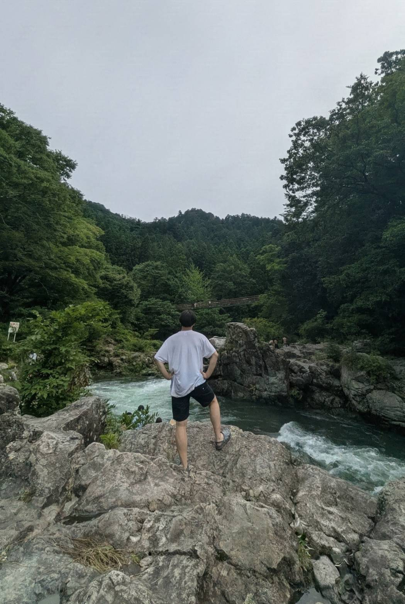
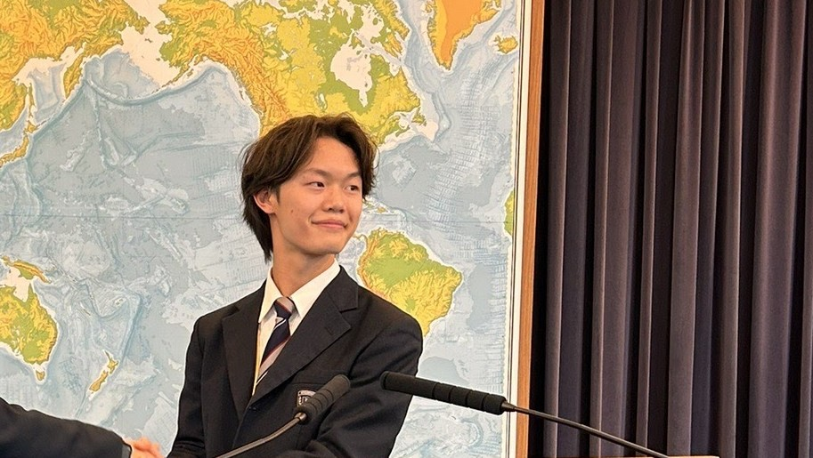

総務部
総務部 のご紹介
会場の手配や当日の運営進行、備品管理など、大会運営の土台となる業務を幅広く担当します。

総務部長
山本 拓翔（やまもと たくと）

門𦚰 樹（かどわき いつき）

中村 圭孝（なかむら よしたか）

康 紫依（こう しい）

髙野 怜生（たかの れお）

後藤 風駕（ごとう ふうが）
会場の手配や当日の運営進行、備品管理など、大会運営の土台となる業務を幅広く担当します。

総務部長
山本 拓翔（やまもと たくと）

門𦚰 樹（かどわき いつき）
中村 圭孝（なかむら よしたか）
康 紫依（こう しい）
髙野 怜生（たかの れお）
後藤 風駕（ごとう ふうが）